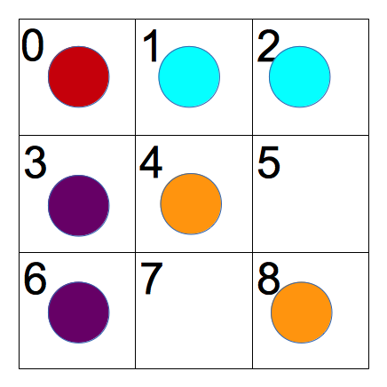

Contenuti
- Manipolazione del DOM
- Interazione client-server
- Web Sockets
Repository su GitHub: https://github.com/gdl-italia/dart_OXO
Dart OXO
Implementazione in Dart del gioco del tris
Struttura
- Client
- Interfaccia grafica
- Server
- Gestione giocatori connessi e stato del gioco
- Sincronizzazione stato del gioco fra i due client
- Calcolo mossa vincente
Web Sockets
Formato dei messaggi
{
"cmd" : "comando",
"arg" : {
"arg1" : "foo",
"arg2" : "bar"
}
}
JSON.stringify({"cmd":"comando","arg":{"arg1":"foo","arg2":"bar"}});
Web Sockets
Connessione ed invio messaggi
WebSocket ws = new WebSocket("ws://" + window.location.host + "/ws");
. . .
ws.send(JSON.stringify({"cmd":"comando","arg":{"arg1":"foo","arg2":"bar"}}));
Ricezione di un messaggio
ws.onMessage.listen((e){
Map dataFromServer = JSON.parse(e.data);
. . .
switch(dataFromServer["cmd"]) {
. . .
}
});
Web Sockets
Login dei giocatori, invio di una mossa
Rappresentazione della griglia

List<int> grid = [0,0,0,0,0,0,0,0,0]; // Indici: 0,1,2,3,4,5,6,7,8
Determinare la mossa vincente
Dart OXO
Codice sorgente
Repository su GitHub: https://github.com/gdl-italia/dart_OXO